Remote provides this0/16Commuting as usualPick up what you value
The Charter Room
Your charter board
Click a value to add it or take it away. The panel explains its whole category.
Drag to look · WASD or arrows to walk · click the floor to move · click what glows
An explorable argument · Rooms edition
After the commute.
What could society gain when work no longer tells us where to be? Step inside. Each room holds one part of the argument. Collect the things you value, watch how much of it remote work can provide, and see what the office asks you to give up.
The 3D view isn’t available in this browser. Every room and exhibit still works through Rooms and In this room, and the full text is in the reading guide.
The reading guide · no 3D needed
After the commute.
Remote work is usually argued about as a perk. This experience argues that it can be a public good, and is honest about where it can go wrong. Everything in the 3D rooms is here as text.
Works on a phone, but suits a larger screen.
Two proposals
Give workers a right to choose remote work wherever tasks allow, with employers required to justify attendance.
Prohibit residence-only pay discounts for comparable work in the same employer-market pay band.
How to read the evidence
Measured
A finding from a particular study or dataset. Its setting and limits matter.
Modelled
A result calculated from assumptions. Change the assumptions and it can change.
Programme
A real initiative or plan. Its results need their own evaluation.
Proposal
Something we advocate. Judge whether its reasons and safeguards persuade you.
Reasoning
An argument from principle or experience, not a study result.
Illustration
An invented example or arithmetic that explains an idea. It predicts nothing.
The meter
In the rooms you can pick up things people value. The meter, “Remote provides this”, rises for values remote work can help provide; some only arrive with good design. Every room also holds at least one commercial priority that pulls work back to the office, and a few rooms hold conditions remote work has to meet. It reflects your own priorities, not a forecast. Levels: Commuting as usual (0+) · A nice perk (3+) · A better week (8+) · A shared benefit (14+) · A public good (21+).
Arrival · 08:12
The Station
This is where the day used to begin.
A platform, a timetable and a crowd all going the same way. Now the station is a crossroads. Each door opens onto one part of the argument that remote work can be more than a perk: a public good. Walk in, look around, pick up the things you value and watch the meter.
How to explore Illustration
Drag to look around. Walk with W A S D or the arrow keys, or click the floor. Click anything that glows to inspect it. Step through a doorway, or use “Rooms”, to travel. Everything is also reachable from the “In this room” list, and the full text is in the reading guide below the experience.
Two proposals Proposal
This experience argues for two things. First, a right to choose remote work wherever tasks allow, with employers explaining when attendance is needed. Second, no residence-only pay discounts for comparable work. Everything else here explains why, what it could achieve, what could go wrong and how to guard against it.
Give workers a right to choose remote work wherever tasks allow, with employers required to justify attendance.
Prohibit residence-only pay discounts for comparable work in the same employer-market pay band.
The meter Illustration
Glowing crystals are things people value. Click one to read what it means, then click it again to add it to your journey. The meter rises when remote work can help provide them; striped segments need good design to deliver. Some values pull the other way, and the meter shows those honestly too. It measures your own priorities, not a forecast for the world.
On the walls
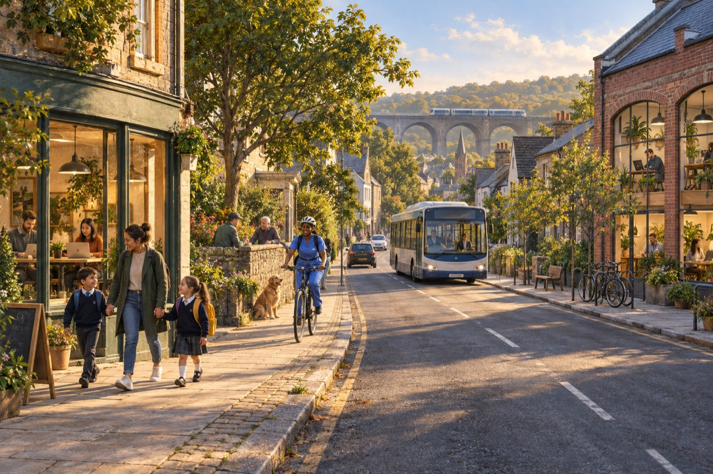
8:12 on a weekday. A weekday morning on a small-town high street: the school run on foot, a nurse cycling to work, neighbours talking over a wall, people at work in a café and an upstairs hub, and a bus with the road almost to itself.
Things you might value here
Choosing where I live · Remote provides. When the job no longer fixes your address, you can live near family, nature or a cheaper rent.
Mornings that start at home · Remote provides. No platform, no traffic jam: the day starts with breakfast, a walk or the school run.
A working week that fits my life · With good design. Work fitted around appointments, school runs and energy levels, within what the team needs.
“It’s company policy” · Commercial priority. An instruction with no reason the work needs: compliance for its own sake.
“The commute is your own time” · Commercial priority. You give the hours and pay the fares; the employer gets you at your desk.
01 · The daily journey
The Commute
What if work stopped deciding where life happens?
For work that travels through a cable, moving a body across a city should need a reason. Every compulsory journey spends time, road space, energy and land.
The commute clock Illustration
How much of your year goes on getting to work? Set your own commute. The arithmetic stays on this page and nothing is sent anywhere.
Example: a 30-minute commute each way, three remote days a week and 46 working weeks gives 3 × 30 × 2 × 46 ÷ 60 = 138 hours a year, about 17 eight-hour working days.
Presence is a clue, not a result Reasoning
A badge swipe proves someone arrived. It says nothing about whether they did good work, helped a colleague or solved the problem. Judge the work instead: agreed outcomes, quality, and the mentoring and care that simple output counts miss. That means better judgement, not more surveillance.
Who should have to explain? Proposal
Some work needs a place: a ward, a lab, a workshop, a secure room. Habit, managerial comfort and a long office lease do not. We propose flipping the default: where the tasks allow it, workers can choose remote work, and employers explain when attendance is needed. Purposeful days together still happen; they just need a reason.
What a real trial found Measured
At Trip.com, 1,612 graduate employees were randomly offered two home days a week. Resignations fell by about a third, from 7.2% to 4.8%. Performance reviews and promotions showed no detectable difference over two years. The biggest drops in quitting were among women, non-managers and people with long commutes.
Limits: One employer and a hybrid schedule. Interns and new starters on probation were excluded because on-site learning matters most for them.
Two Tuesdays. The same hour, spent two ways: squeezed onto a grey station platform, or at breakfast with her son before the walk to school.
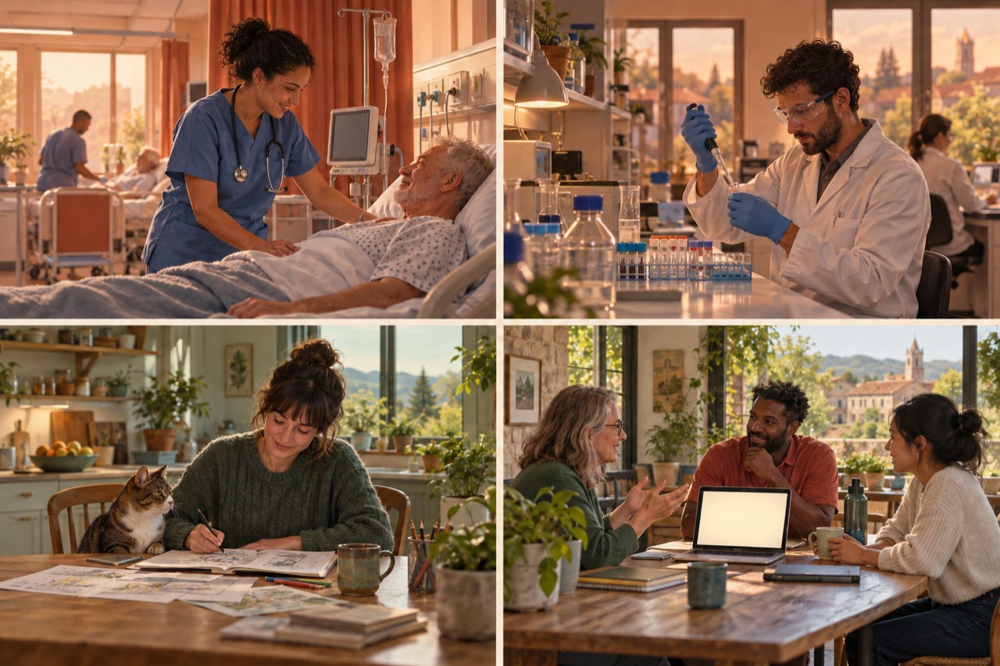
Work that needs a place, and work that doesn’t. Some work needs a place: a nurse at a bedside, a researcher at the bench. Some doesn’t: an illustrator at the kitchen table, a small team planning around a laptop.What the commute takes. Traffic fills the top of the hourglass and runs out as the hours go. Beside it drift the things the time could have held: a birthday, a game of football, the garden, an hour on a bench with a friend.
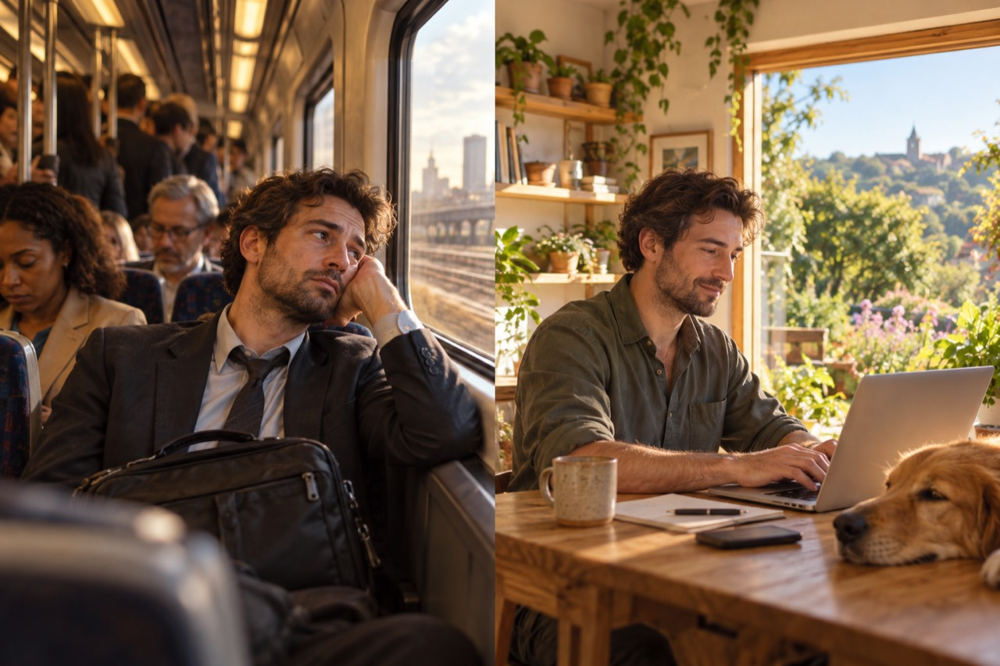
The 7:40, or the desk by the window. The commute he had and the morning he has now: slumped on a packed train into the city, or working by an open window with the dog asleep beside the laptop.
Things you might value here
My time back · Remote provides. About 72 minutes saved on each home-working day, across 27 countries (Measured).
Being judged on my work, not my attendance · With good design. Results, not badge swipes. It only helps if managers learn to judge outcomes well.
Money that stays in my pocket · Remote provides. Fewer fares, less fuel, no parking, fewer bought lunches.
The buzz of a busy office · A condition to meet. Remote work thins this out. Purposeful days together and local hubs can bring some of it back.
“Our culture needs you here” · Commercial priority. Belonging made conditional on attendance, with the price paid by the worker.
“I need to see people working” · Commercial priority. Managing by line of sight: presence mistaken for productivity.
02 · Environment · land · energy
The Lighter Footprint
The greenest commute is the one we don’t need.
Skip a car journey and you skip its fuel, exhaust, tyre dust and noise all at once. The bigger prize is building less of the world around the rush hour.
The morning road Illustration
Set how many days a week people work remotely and watch the road. Then try the arithmetic for a group of drivers, including extra driving that eats into the saving.
Group arithmetic: avoided vehicle-km = drivers × remote days × one-way km × 2; net = avoided − drivers × extra weekly driving. Extra driving can outweigh the saving, and the result can go negative.
How many days make a difference? Modelled
A US carbon-accounting model compared work-related footprints by schedule. One day at home cut about 2%. Two to four days cut about 11–29%. A fully remote baseline came out about 54% lower, mostly from less office energy.
All days on site: The baseline in the model.
1 day at home: About 2% lower work-related footprint. Extra trips and home energy cancel most of the gain.
2–4 days at home: About 11–29% lower in the model.
Fully remote: About 54% lower for the model’s fully remote baseline (up to 58% across scenarios), mostly from less office energy.
Limits: A model, not an observed effect. The studied company sits in a large city with reasonable transit. Commute mode, other trips, home energy and office use all change the answer.
Some savings leak away through extra errands, a heated home office, a bigger house or more flights. A leak doesn’t empty the bucket, though. The question is always the net: what is avoided minus what is added. Compact places, efficient buildings and sensible travel keep it positive.
Limits: Rebound can’t be assumed small. It has to be measured.
Land we could give back Proposal
Fewer cars parked all day and fewer half-empty offices free up land in the middle of towns. That land could hold shade, trees, play space or homes, but only if someone decides to use it that way.
On the walls
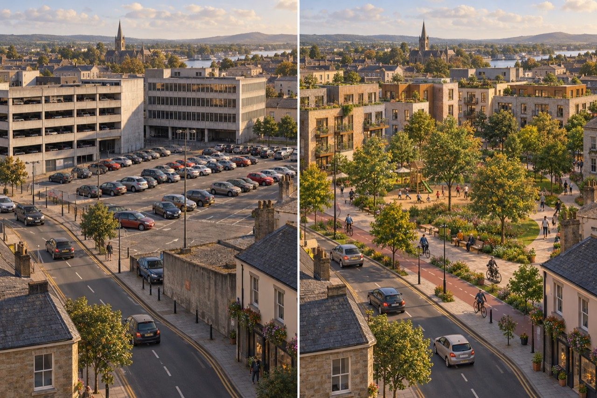
Parks instead of parking. The same town twice: a multi-storey car park and a full surface lot, then the same land as a park, a playground, a cycle lane and new homes. What fewer daily car trips could free, if someone decides to use the land that way.
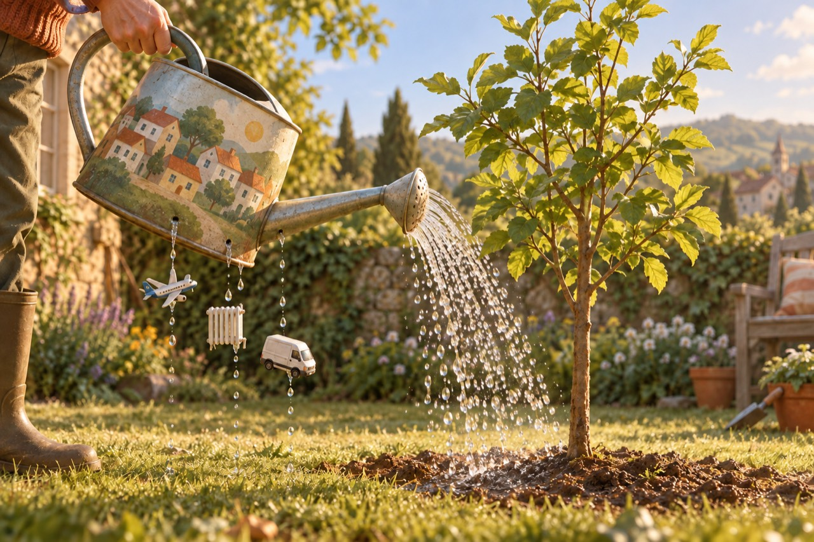
The leaky watering can. Most of the water reaches the young tree, but some leaks away on the way: the extra flight, the home heated all day, the deliveries. The question is always the net.
Things you might value here
Cleaner air on my street · Remote provides. Each avoided car commute takes its exhaust, tyre dust and noise off the road.
A stable climate · With good design. Real, but schedule-dependent: more remote days and less office space cut more (Modelled).
Parks instead of parking · With good design. Fewer parked cars free up land, but only a decision turns it into shade, play or homes.
“We’re paying for the building” · Commercial priority. People made to travel so that a property decision looks justified.
03 · Community · care · shared space
The Everyday Commons
Give the neighbourhood its weekdays back.
A street is more than a place to sleep when people are around in the daytime. Time not spent travelling can become a school pickup, lunch with a parent, an hour at the allotment, or, if we are careless, just more work.
Where the saved time goes Measured
A survey across 27 countries estimated about 72 minutes saved on each home-working day. On average, roughly 40% went back into work, about a third into leisure and about a tenth into caring for others.
Limits: Averages across countries and people. Nobody is guaranteed the time, or control over how it is used.
A 2026 study of US workers found that people in jobs that could go remote spent about an extra hour alone each workday after the pandemic, with worse distress and more mental-health care and antidepressant prescriptions. The effects were concentrated among people living alone. This is the strongest evidence against careless remote work, and it belongs in the room.
Limits: The study compares occupations, not individual schedules, and does not test whether hubs or team days fix the problem. Those are proposals that still need checking.
A model for England and Wales found that when commuting falls, local service spending shifts out of a few city-centre neighbourhoods and spreads across many residential ones. It is a redistribution, not new money, and the least affluent areas gain least.
Limits: The model assumes people want to spend the same and doesn’t model moving house.
Being near home helps families juggle care, but working at home is not childcare and is no substitute for paid care or proper leave. If saved time silently becomes extra unpaid work, especially for women, the gain is lost. Protect boundaries as carefully as flexibility.
On the walls
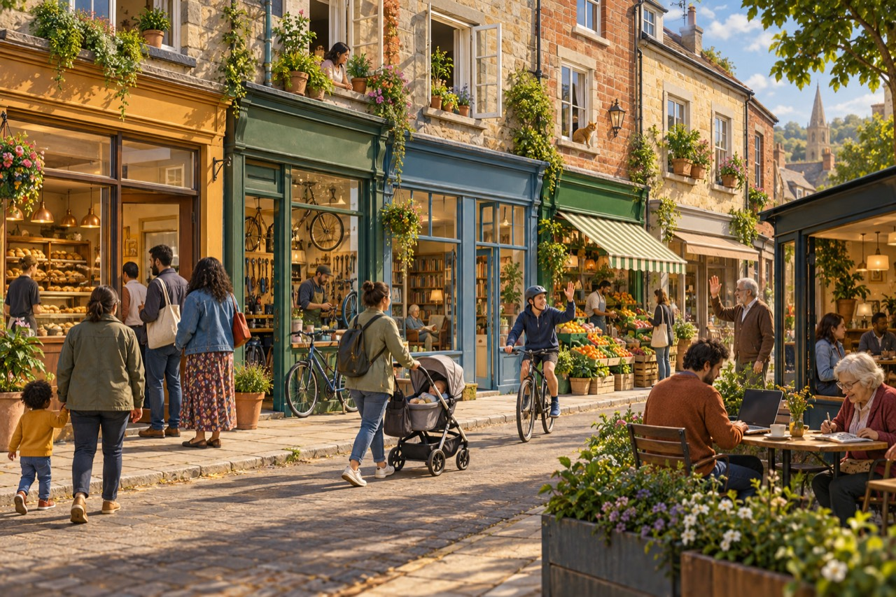
A high street beyond lunchtime. Weekday trade spread across neighbourhoods instead of packed into one centre: the bakery, the bike shop, the bookshop and the greengrocer busy on an ordinary afternoon.
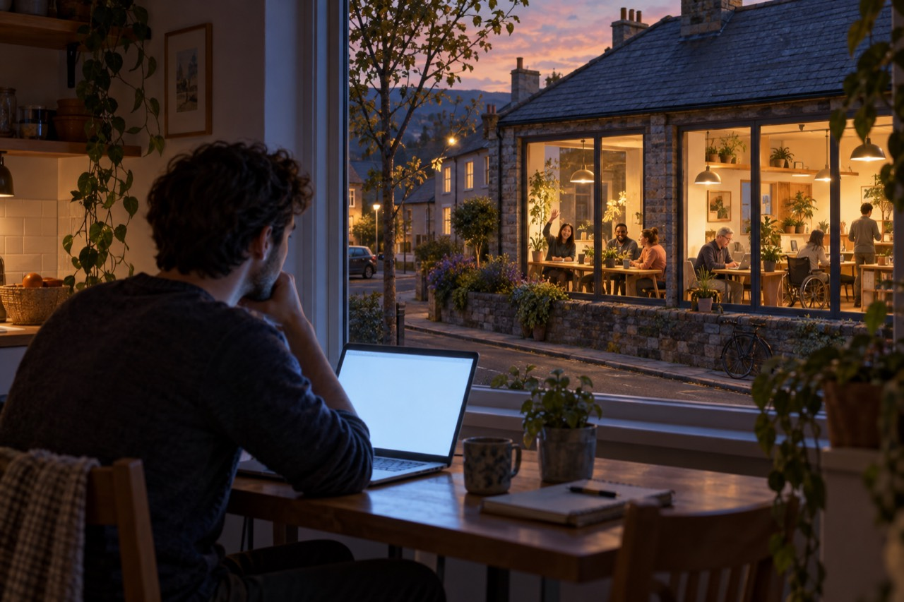
Alone, or together. Working alone at the kitchen table, looking across at a lit hub where neighbours work side by side. Isolation is a real risk of careless remote work, and shared places near home are part of the answer.
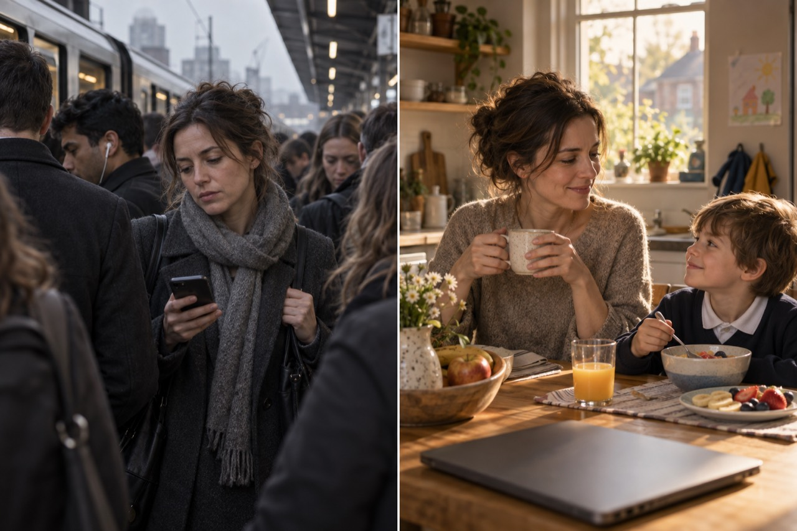
Where the hour goes. The hour the commute took, back at the breakfast table: a packed platform on one side, a slow breakfast with her son on the other.Sand into traffic. The hours run down into the traffic jam while the things they could have held blow away like sand: a birthday, a football match, the garden, an afternoon on a bench with a friend.
Things you might value here
Time with family · Remote provides. About a third of saved commute time goes to leisure and a tenth to caring for others (Measured).
Being there for people who need me · Remote provides. Close by for a sick child, an ageing parent or a neighbour who needs a hand.
A lively neighbourhood on weekdays · With good design. Spending moves towards where people live, but unevenly; the least affluent areas gain least (Modelled).
Not feeling alone · A condition to meet. Careless remote work makes isolation worse, especially for people who live alone (Measured). Company by design is the fix.
A bustling city centre · A condition to meet. Fewer commuters mean less weekday trade in office districts. They need help to become mixed, all-day places.
“Keep the business district busy” · Commercial priority. Whole workforces sent commuting to protect footfall and rents in a few districts.
04 · Heritage · livelihoods · belonging
The Living Village
Keep a way of life alive, not just its buildings.
A village can lose its school, shop or bus long before its last resident leaves. Income earned elsewhere could keep that everyday demand alive, if the people who already live there can stay.
Weekday lights Illustration
Switch between a commuter village and a village where people work locally, and watch which windows stay lit at midday. Every place has its own threshold for keeping a shop or school open; this shows the idea, not a number.
Outside income, local livelihoods Proposal
Remote earnings could sit alongside farming, fishing, craft and repair rather than replace them. Young people might stay, relatives might return, and older residents could keep support nearby. Year-round residents matter more than tourist turnover.
Limits: No multiplier or service threshold is established by the programmes cited here. This is a possibility to test with local measures.
What should come first? Proposal
A village wants new residents. What should it do first? Choose, and see the trade-off.
Recruit newcomers now: Demand arrives before homes do. Rents rise, a young family leaves, and the shop gains customers but loses staff. The village grows, but not for the people who were already there.
Protect and restore homes first: Empty homes are restored and tenancies secured before anyone is invited. Growth is slower and the shop may need help in the meantime, but residents stay and newcomers join a living place. (recommended)
A small, resident-approved pilot: A handful of households arrive under a plan residents agreed, with a pause rule if rents or services strain. It is slower to scale, but easier to correct.
Who is already trying Programme
In Spain, Holapueblo asks participating towns to identify at least two available rental homes. The Welcoming Villages network checks remote-work conditions and gives each town a local host. Both show that welcome can be planned.
Limits: Entry conditions are not evidence of affordability, lasting settlement or service survival.
Weekday lights. A hill village lived in on a weekday, not just in August: someone works at a window, the baker serves a neighbour, children play in the square and the bus calls.
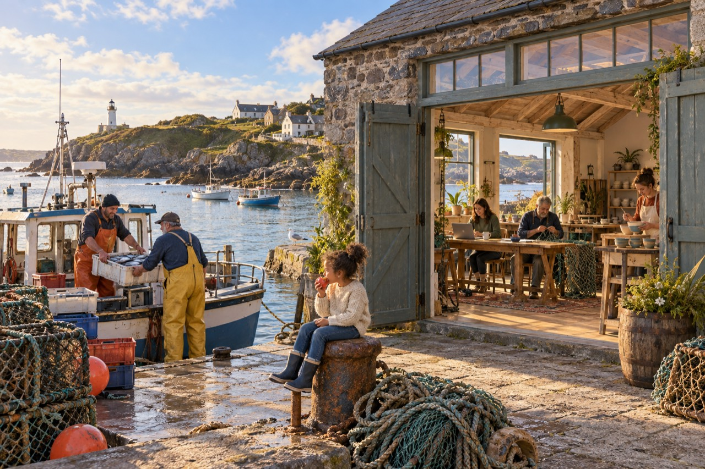
Beside the old trades. Remote work beside the old trades, not instead of them: the boat comes in with the catch while the old net store has become a workshop and a place to work.
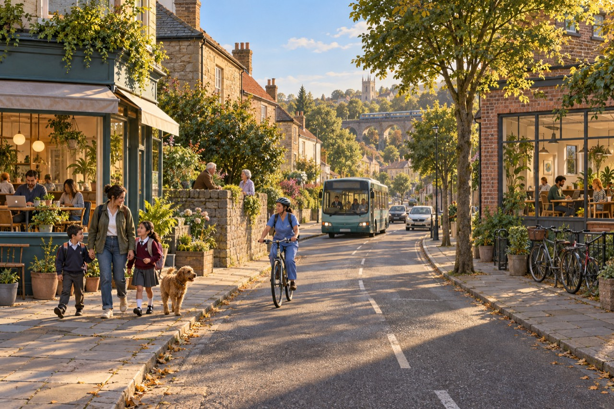
A weekday morning, close to home. A small-town street on a working morning: the walk to school, a nurse cycling to her shift, neighbours chatting over a wall, people at work in the café and the hub, and a quiet road with a bus.
Things you might value here
Living near the people I love · Remote provides. A job that travels lets people stay near ageing parents, children or the place they grew up.
Villages that stay alive · With good design. Year-round residents can keep a shop, school or bus viable, if locals can stay too.
Young people who can stay · With good design. A career without leaving home, if there are homes and connections to stay for.
Homes locals can afford · A condition to meet. New demand can raise rents in small places. Protect and restore homes before inviting growth.
“We only hire within commuting distance” · Commercial priority. Talent filtered by postcode: the village, the region and the carer need not apply.
05 · Inclusion · fairness · participation
An Open Door
Opportunity should travel further than people have to.
A long commute is a filter. It quietly screens out people who can’t drive, can’t stand on a train for an hour, care for someone or live too far from where the jobs cluster.
The barriers a commute adds Reasoning
Disability, chronic illness, caring duties, rural distance and not owning a car can each turn a reachable job into an impossible one. Removing the daily journey removes one barrier. The effect is individual: for some people, an accessible shared workspace nearby works better than home. Choice matters more than a blanket rule.
The connection gap Measured
In 2024 about 83% of urban residents and 48% of rural residents used the Internet worldwide, according to the ITU. In high-income countries the gap is much smaller. Remote opportunity depends on infrastructure that many places still lack.
Limits: Internet use is not the same as speed, reliability or affordability.
Sam is a nurse and will always work on site. Remote work doesn’t help Sam directly, but its public gains can: fewer cars on Sam’s route, freed land for homes near the hospital, money for an all-day bus. Sharing those gains is part of the deal, not an afterthought.
A desk for everyone Programme
Ireland’s Connected Hubs network lets people book desks and meeting rooms in local hubs run by community, public and private owners. A well-connected shared space can give people a fast line, a quiet room and company, with no spare room needed.
Limits: Hub programmes describe infrastructure, not proof of lasting employment gains.
An open door. For some people a nearby, step-free workspace works better than home. Choice matters.
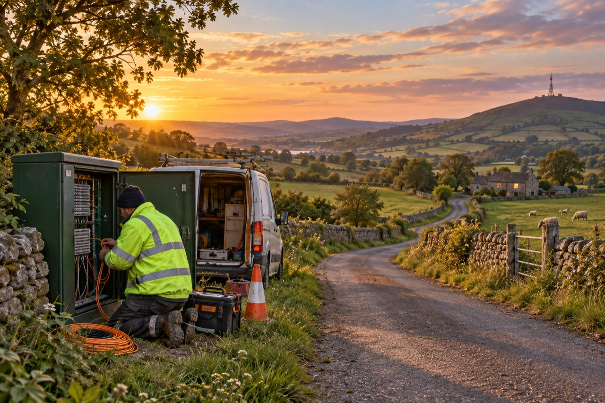
The last mile. Remote opportunity depends on a connection, and many rural places are still waiting for one. An engineer works at a roadside cabinet as the sun sets over the hills.
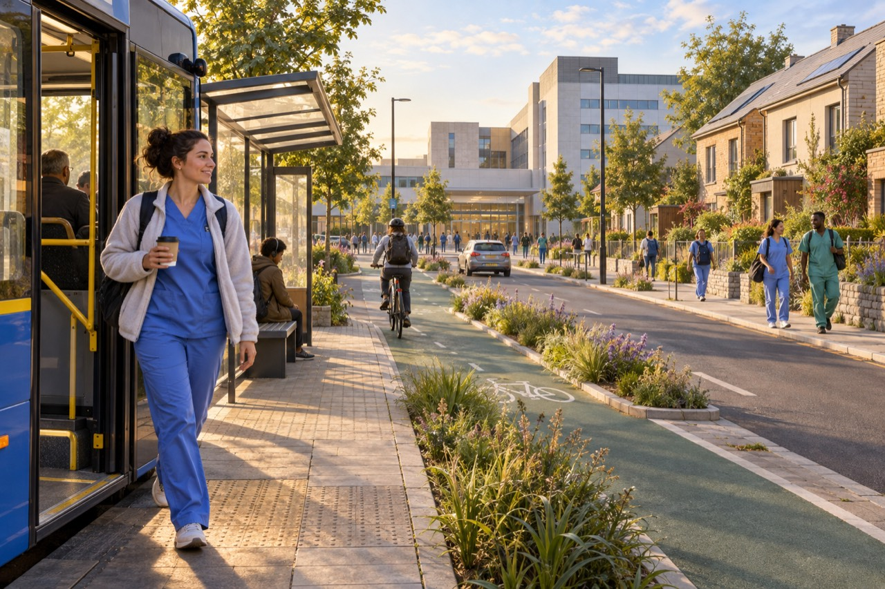
Sam’s morning. Sam is a nurse and will always work on site, but the public gains can still reach her: a quieter road, a cycle lane, homes nearby and a bus that runs all day.
Things you might value here
Jobs open to disabled people and carers · Remote provides. Removing a daily journey removes a barrier. For some, an accessible local hub works better than home.
Opportunity wherever you live · With good design. Only with reliable connections and somewhere suitable to work.
A fair deal for people who must be on site · With good design. Only if public gains, like freed road space and lower emissions, are shared with on-site workers.
“One rule for everyone” · Commercial priority. Equal on paper, unequal in practice: disabled people and carers carry the burden.
06 · Fair pay · global opportunity
Beyond the Postcode
Equal work. Equal pay. Wherever you live.
If you can do the job from anywhere, should your address set your salary? We think the same work for the same employer deserves the same pay band.
The pay scale Illustration
Two people do the same job for the same employer at the same level. Worker A lives near the office; Worker B lives in another community. Set a residence discount, then apply the rule.
Illustration: with an invented €60,000 reference, a 30% residence discount pays Worker B €42,000, which is €18,000 a year less for the same work. Under the rule both are paid €60,000. Equal gross base pay doesn’t mean equal take-home pay, purchasing power or benefits.
The rule Proposal
Prohibit residence-only base-pay discounts for comparable work in the same employer-market pay band. Differences in responsibility, experience, hours or contribution can still be explained and paid for. An address alone can’t.
Limits: This is our proposal, not current law. The EU Pay Transparency Directive (2023/970) requires pay transparency for equal pay between women and men. It is useful context for pay bands, but it does not establish this rule.
Equal pay can give newcomers more spending power in places with cheaper, scarcer homes. That makes resident housing protection more important, not less. Fair wages and affordable homes are joint goals; paying newcomers less is not a housing policy.
The hard parts Proposal
A multinational needs a declared reference market and a way to challenge sneaky changes to it. The rule needs protection against relabelling comparable roles or outsourcing them just to dodge it. Taxes, social protection, work permits and statutory benefits still follow local law.
On the walls
Same work, two addresses. Two people drawing the same plans, one in a city flat and one in a hill village, joined by a single golden thread. Same work, same pay: the equal-pay rule this room proposes.
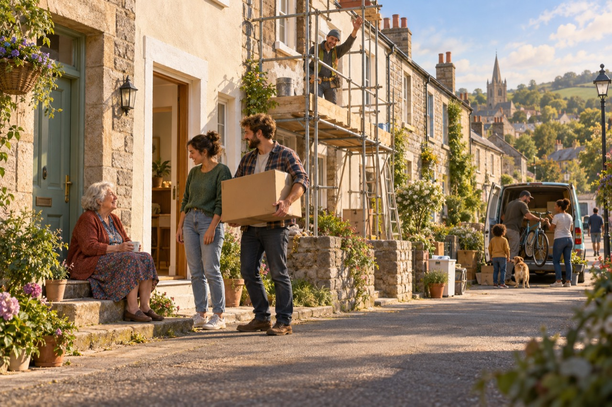
Homes held for the people who live here. Old terraced houses restored and lived in: a builder on the scaffolding, newcomers carrying boxes, a long-time neighbour on her doorstep. Fair pay and affordable homes are joint goals.Work that can travel. The nurse and the lab scientist have to be there. The illustrator and the planning meeting, with a colleague joining on screen, could be anywhere, and for that work the address shouldn’t set the pay.
Things you might value here
Equal pay for equal work · With good design. Remote work makes it possible to do the job from anywhere. A pay rule makes it fair.
Regions that keep their talent · With good design. People can stay and earn; regions benefit if spending and housing stay local and fair.
Talent from everywhere · Remote provides. Employers hire the best person for the job, not the best person within an hour’s drive.
“We pay market rates” · Commercial priority. Move your chair and your work is suddenly worth less: same job, same employer, less pay.
07 · A gallery of real places
Already Taking Shape
The future has precedents.
None of this is science fiction. Governments and towns already treat remote work and nearby services as civic infrastructure. Their programmes are worth learning from, and worth checking.
Ireland: Connected Hubs and Our Rural Future Programme
Ireland · National hub network and place-based policy
Ireland’s rural policy joined remote work to broadband, town renewal, local planning, transport, and community life. Connected Hubs gives people a shared way to find and book desks and meeting rooms in hubs run by a mix of community, public, and private owners.
What to borrow: A network of existing local hubs can connect outside jobs with everyday town life and give people a work option between home and a distant office.
Limits: These sources describe infrastructure and policy goals, not proof that a hub alone brings permanent residents, keeps traditional trades viable, or sustains a particular service.
Ireland · National policy with town-led plans and support
Town Centre First asks residents, businesses, civic groups, and local authorities to shape plans for their own towns, with attention to empty buildings, dereliction, and town-centre living.
What to borrow: Begin with what permanent residents need and bring existing buildings back into use before adding new demand or expanding the settlement footprint.
Limits: The policy is not a test of remote-worker attraction. It does not quantify how many residents or customers a village needs to keep a shop, workshop, pub, care service, school, or bus route open.
Spain: Holapueblo and the Welcoming Villages Network Programme
Rural municipalities across Spain · Matching program and network with published municipal onboarding
Holapueblo matches people who want to settle and start a business with towns seeking residents, offers mentoring, and asks listed towns to identify at least two rentals. The Red Nacional de Pueblos Acogedores checks remote-work conditions and municipal backing, and gives each town a local host.
What to borrow: Pair outside income or enterprise with a locally agreed plan, available housing, verified work conditions, and a person who can help newcomers take part in ordinary community life.
Limits: Holapueblo is entrepreneurship-led and the network is a minimum-entry check. Neither source proves rent affordability, long-term retention, cultural belonging, or that new spending keeps local services viable.
The pilot paired a shared work space, Wi-Fi, and events with local business and resident involvement. It was developed by Startup Madeira with the Madeira Regional Government and local partners.
What to borrow: A work hub can open doors to local shops, food, repair, culture, and community contacts when organizers build those relationships into the welcome.
Limits: The program’s stated intent is not an independent impact evaluation. These sources do not establish permanent settlement, continuity for traditional occupations, affordability, or the absence of rent displacement.
The 15-minute neighbourhood and 30-minute rural community Programme
Paris and European regional planning · Planning goals in municipal and EU rural-mobility guidance
Paris defines proximity through daily needs reachable by a short walk or cycle. EU rural-mobility guidance discusses a 30-minute reach to essential services, adapted to rural distances and settlement patterns.
What to borrow: Put homes, small work spaces, and daily services in existing compact centres, then connect villages to regional services with reliable shared and public transport.
Limits: A 15- or 30-minute goal does not prove every place can provide every service. The cited guidance sets no minimum resident count or service-viability threshold; keep plans grounded in local capacity and avoid greenfield sprawl or car-only access.
European towns, cities, and rural regions · Territorial planning direction; remote-work implications reviewed by Nordregio in 2024
The EU Territorial Agenda calls for connected networks of cities, towns, and rural places. Nordregio’s 2024 review examines whether remote work could shift activity among centres and emphasizes compact, accessible places alongside unresolved housing, transport, and equity questions.
What to borrow: Treat a region as a network of distinct local centres, not a contest to pull every worker out of a city. Outside wages can add demand for traditional local work when people live in existing places and spend through local businesses.
Limits: Policy goals and research synthesis do not show that remote work causes balanced regional growth. The sources do not quantify local service thresholds or prove that external income supports any particular occupation.
A town-centre hub. An old building on a market square reused as a place to work. It shows the kind of building many town-centre programmes reuse; it is not one of the programmes in this room.The welcome. A neighbour hands over the keys and the street says hello. It shows the hosting and housing that village-welcome programmes plan for; it is not a real programme.
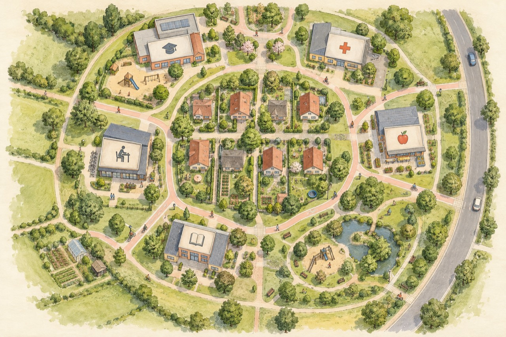
Everything within a short walk. A plan of a neighbourhood where the school, clinic, grocer, library, work hub, playgrounds and allotments are a short walk or cycle from every home. It illustrates proximity planning; it is not a real place.
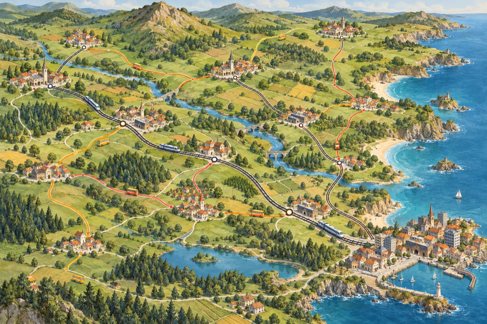
A region of connected towns. Villages and towns linked by rail and bus, from the hills to a port city on the coast. It illustrates the idea of a region with many centres; it is not a real map.
Things you might value here
Town centres with a second life · With good design. Empty banks and shops can become hubs, homes and services that keep main streets busy.
Daily needs within a short walk · With good design. Shops, school, clinic, park and a place to work, close enough to walk or cycle.
Company when I want it · With good design. Local hubs and planned team days give people company without a daily commute.
“We’ve always worked this way” · Commercial priority. Habit dressed up as principle, while governments and towns are already planning for change.
08 · An invented community · a design proposal
Commonstead
A Commonstead: villages organised so people can stay.
A Commonstead is our name for a group of existing villages and a small market town that plan together around remote work. A rail line and an all-day bus link them. Homes are held for the people who live there, empty buildings come back into use, and a shared work hub offers desks, a fast connection and daytime company. Residents decide how it grows. This one is invented for the exhibit: a design proposal, not a real place or a proven model.
What is a Commonstead? Proposal
The name joins “common” and “homestead”: a home place that people hold and run together. It isn’t a new town in a field. It takes places that already exist and gives them what they need, so people can stay, work and belong without a daily commute.
Existing places. A few villages and a market town, linked by rail and an all-day bus.
Homes held for residents. A community housing trust secures homes for people who live and work there. Empty homes are restored before anyone is recruited.
A public work hub. Desks, meeting rooms, a fast connection and company, open to local young people and on-site workers as well as remote workers.
Daily needs close by. Shops, school, green space and services within reach on foot or by bus, so weekday life stays local.
Residents in charge. Residents govern the growth plan, and growth pauses if rents or services come under strain.
Limits: Invented for this exhibit. No Commonstead exists, and nothing here has been costed or tested. The real programmes in the previous room show parts of the idea in practice.
What should Commonstead fund first? Proposal
Delivery capacity is limited. Choose the first big investment and see what has to wait. These are qualitative priorities, not a costed budget.
Homes first: Restore vacant homes and secure tenancies before inviting growth. What waits: Recruitment and the full hub wait. Shops may need interim support while demand grows slowly. Check: Are existing residents staying, and are restored homes affordable and lived in year-round?
Work hub first: Shared workspace, a fast connection and daytime company for existing residents, quickly. What waits: Housing protection and the bus still need funding. Keep arrival incentives paused until those gaps close. Check: Who can reach and afford the hub, who uses it, and do isolation and access improve?
Connections first: An all-day bus supports on-site workers, care trips and regional services. What waits: A running cost every year, using money that could open the hub or restore homes sooner. Check: Can essential workers reach their shifts, and can the service be funded beyond a pilot?
Keep the safeguards Proposal
Three safeguards stay goals even when delivery is phased. Remove one to see the risk it leaves open.
Protect resident housing and reuse empty homes. Without it: Arrival incentives without housing protection can displace residents.
Compact growth, green space and all-day transit. Without it: Car-dependent growth can erase the environmental gains.
An accessible public work hub. Without it: Home-only working excludes people without suitable space and leaves people alone.
From drawing to community Proposal
Four phases, each with a check before the next one starts.
Listen and measure. Map empty homes, resident needs, connection gaps, service capacity and actual travel. Give residents a real say. Before the next phase: Housing costs, vacancies, all-day service access and local spending are recorded.
Make staying possible. Restore homes, fund broadband and open a shared hub. Local residents use the opportunity first. Before the next phase: Existing households stay, and restored homes are occupied year-round.
Connect and invite carefully. Improve regional transport and invite returning residents and long-term households within proven capacity. Before the next phase: Service waiting times, school numbers and resident-reported displacement are tracked.
Learn before growing. Expand only if wellbeing, affordability and the net environmental footprint improve. Pause incentives if rents or service strain rise. Publish failures as well as successes. Before the next phase: Residents review comparable before-and-after data.
Who decides and who gains Proposal
Residents govern the growth plan, with newcomers and local workers represented. A community housing trust secures homes for existing residents and essential workers. Broadband and workspaces serve local young people too. Procurement includes local repairers and craftspeople. Employers who join are asked to publish location-independent pay bands.
On the walls
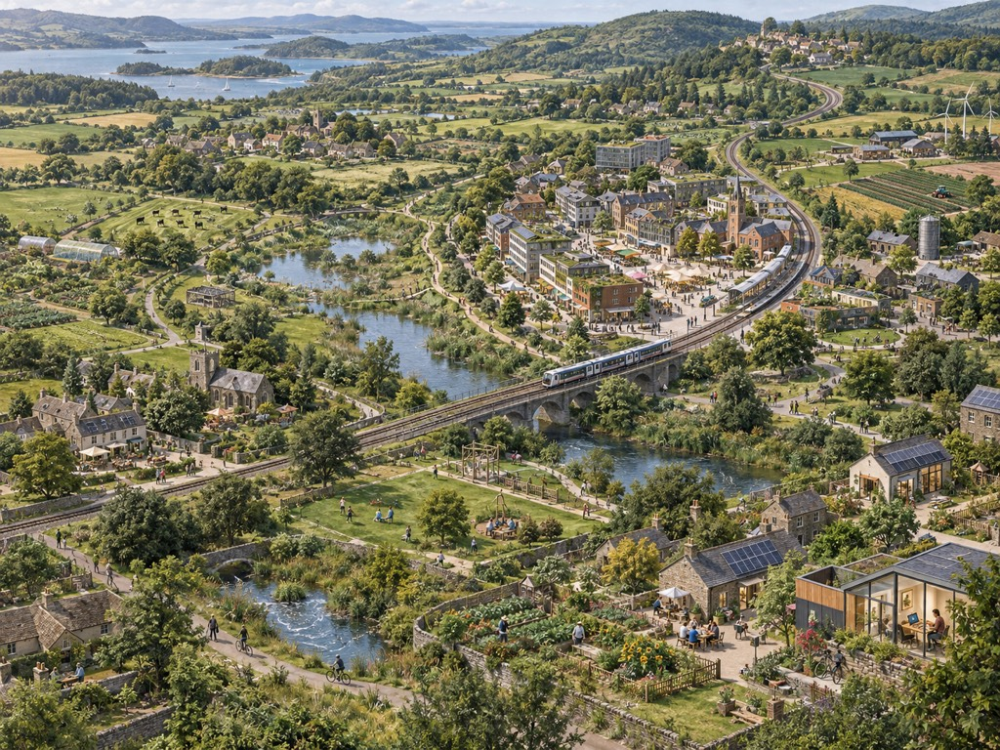
A Commonstead from above. Villages, a market town and the rail line that links them, with the river, farms and allotments kept green in between.
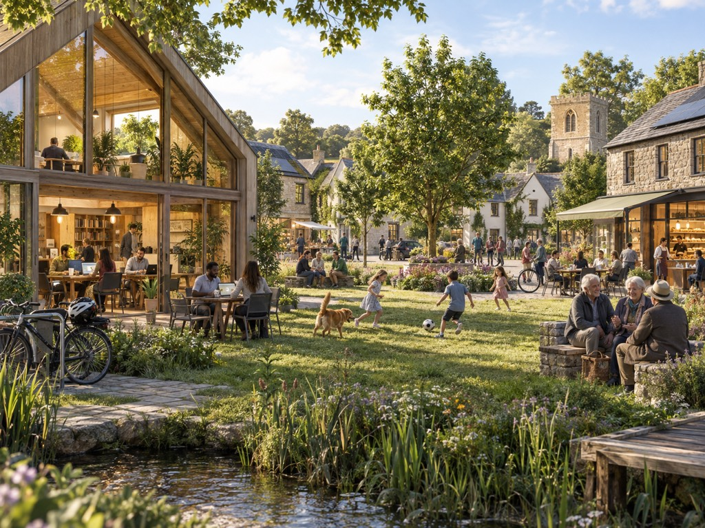
The hub on the green. A shared work hub opens onto the village green, where children play and neighbours meet.
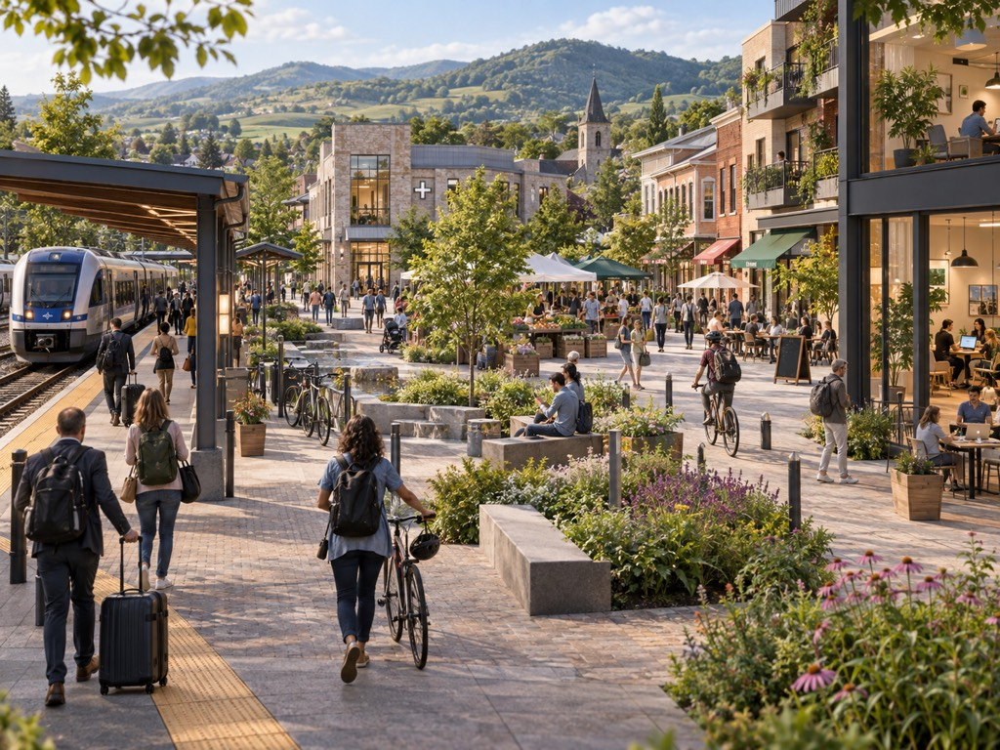
The station square. The market town’s station opens onto a square with a clinic, a market and cafés, so a train journey and the day’s errands share one short walk.
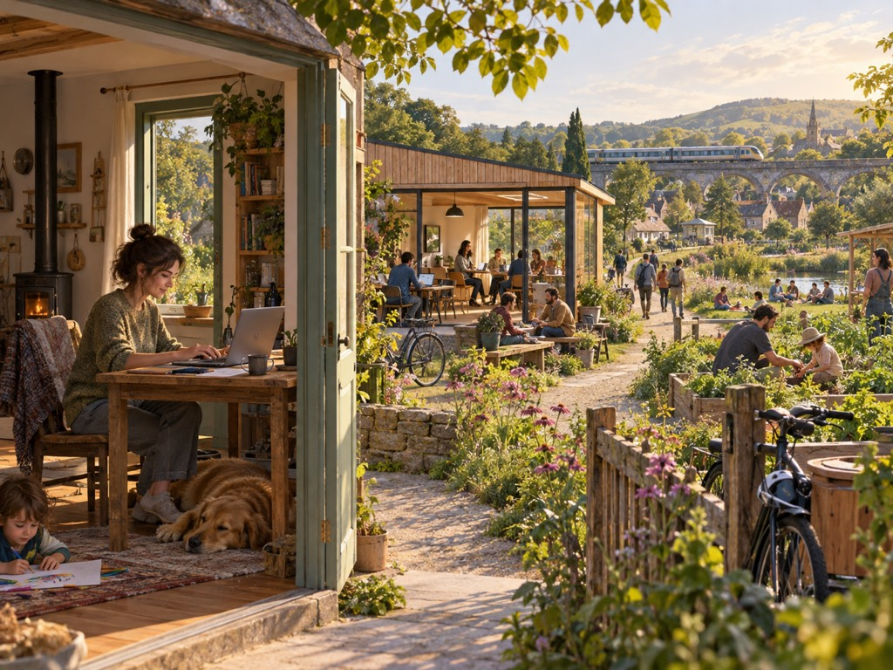
Home, hub and garden. Working from home, with the shared hub, the gardens and the train a short walk away.
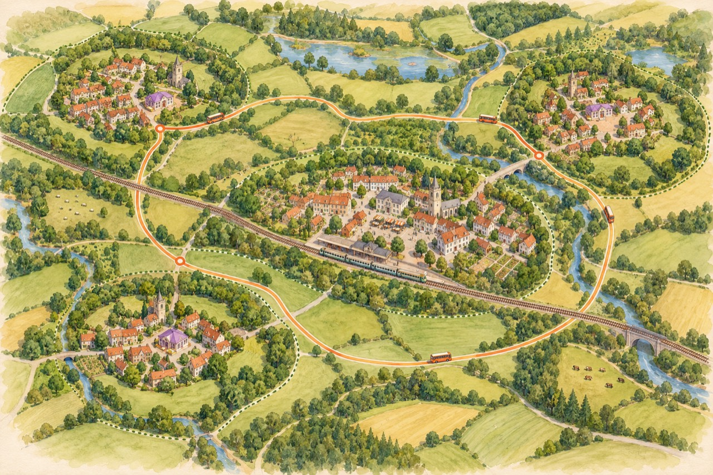
The Commonstead plan. Four villages and a market town, linked by the railway and an all-day bus loop, each village with its own shared hub (the purple roofs). Invented for this exhibit.
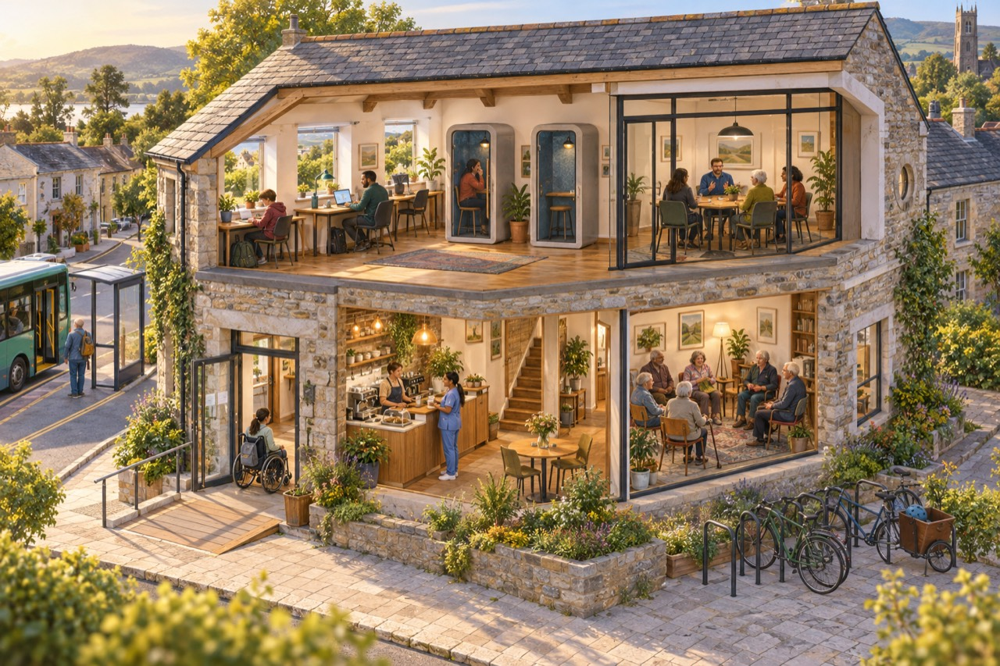
Inside the work hub. A cut-away of the shared hub: desks, quiet booths and a meeting room upstairs; a café, a step-free entrance and a lounge where older residents meet downstairs; the bus stops outside.
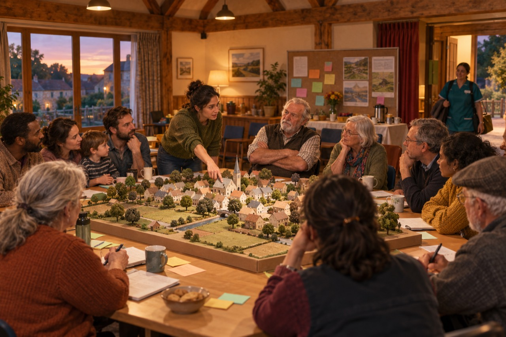
Residents decide. Neighbours of every age gather round a model of the village to argue over the plan. The growth plan belongs to the people who live there.
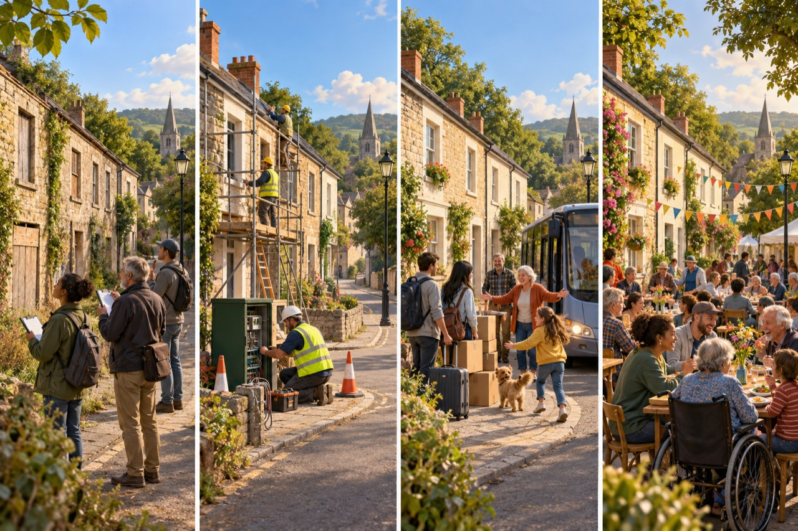
From drawing to community. Four steps along one street: survey the empty homes, restore them and bring in the connection, welcome the first newcomers, then share a table. Each phase has a check before the next one starts.
Things you might value here
Places designed around everyday life · With good design. Remote work gives planners room to put homes, services and work close together. The planning still has to happen.
A say in how my place grows · With good design. Growth that residents choose, instead of change that happens to them.
Walking and cycling instead of driving · With good design. In a compact place built around a hub, everyday trips are short enough to walk or cycle.
“Growth belongs in the big city” · Commercial priority. Opportunity piled up where housing is dearest; everywhere else commutes in or empties out.
09 · Ten objections
The Great Hall
A strong case can take a challenge.
Ten of the best objections to remote work, each in its own alcove. Hear the objection, a human reply and what the evidence says. Then decide where you land.
The objections and replies are written voices for this exhibit. They represent common views, not quotes from real people. The replies grew from the project author’s responses and were rewritten for clarity, accuracy and balance.
1. People learn by being together.
“I learned my job by overhearing how the seniors handled problems. A new starter on a video call never gets that.”
That’s real, and I wouldn’t pretend otherwise. But most offices never planned that learning. They hoped it would happen near the coffee machine, and plenty of people never got it there either. If juniors need time near experienced colleagues, schedule it, protect the mentors’ time and check that it works. That is a case for purposeful days together, not for everyone commuting five days a week.
The evidence Measured
At one large firm, sitting near teammates increased code-review feedback by 18.3% and improved code quality, with the benefit going mostly to younger and newer engineers. Senior engineers wrote less code while they mentored. The Trip.com trial excluded interns and probationary staff because on-site learning matters for them.
Limits: One firm’s engineers, and not randomised by location. No study here tests a well-designed remote mentoring programme.
What would settle it: Compare feedback, skill growth and mentor time across remote, hybrid and office set-ups, by role and seniority.
Where we land: Fund mentoring on purpose and bring people together when learning needs it. A learning need doesn’t justify daily attendance for every role.
2. Remote means lonely.
“Working from home sounds lovely until you realise you haven’t spoken to anyone since Tuesday.”
Plenty of people know that feeling, and the research says it isn’t just a feeling. But the choice isn’t “office or loneliness”. A shared space down the road, a team that meets on purpose and a hard stop at six are all design choices. If remote work becomes a right, looking after people’s social lives has to come with it, especially for those who live alone.
The evidence Measured
A 2026 study of five US surveys (588,322 workers) found people in remote-capable jobs spent about an extra hour alone per workday after the pandemic, with worse distress and more mental-health care and antidepressant prescriptions. Effects were concentrated among people living alone.
Limits: Compares occupations rather than individual schedules. It does not test hubs or other fixes.
What would settle it: Test optional hubs and protected social time against a baseline, and measure isolation and mental health, especially for people living alone.
Where we land: Keep the choice and build social connection into it. Isolation is a design problem with real stakes, not proof that everyone must commute.
3. It’s a perk for laptop workers.
“This is great for people with laptops. The nurse, the bus driver and the warehouse picker still have to show up.”
True, and they always will. But someone having to climb a power pole doesn’t mean an analyst should sit in traffic. The fair answer isn’t to make everyone carry the same burden. It is to drop the burden where it isn’t needed and put some of what we save, in road space, emissions and public money, into making on-site jobs better: reliable buses, affordable homes near work, decent shifts.
The evidence Measured
In the Trip.com trial the biggest drops in quitting were among women, non-managers and long commuters. The ILO documents large differences in which jobs and places can support home working.
Limits: One employer’s graduates. Remote access does not fix unequal pay, housing or services for on-site workers on its own.
What would settle it: Track who can work remotely, and retention, pay and conditions by occupation, income, gender, disability and commute, including whether public gains reach on-site workers.
Where we land: Extend remote choice where tasks allow, and put the public gains into transport, homes and conditions for people who must be on site.
4. The green savings are a myth.
“People who work from home just drive somewhere else, heat the whole house all day and fly more. The savings vanish.”
Some of the saving leaks away; you’d expect that. But a leak isn’t an empty bucket. The question is the net: what’s avoided minus what’s added. The details matter too. One day a week at home barely changes anything, while a properly remote week, an efficient home and less office space can. So measure it honestly and design for the bigger version.
The evidence Modelled
In a US carbon-accounting model, one home day cut the work-related footprint by about 2%, two to four days by 11–29%, and a fully remote baseline by about 54% (up to 58% across scenarios).
Limits: A model, not an observed effect. The studied company is in a large city with reasonable transit.
What would settle it: Measure commute and other travel, home and office energy, and office space against a comparable baseline.
Where we land: Go for the net saving: meaningful remote schedules, efficient buildings and less office space. Measure the rebound instead of assuming it away.
5. Empty centres kill shops and transit.
“Empty office districts kill the sandwich shops, and the train fares that keep transit running.”
Some city-centre businesses do lose out, and they deserve help adapting. But people don’t stop eating lunch when they stop commuting; they buy it somewhere else, often closer to home. And a transit system that only works if everyone is forced onto it at eight in the morning isn’t a healthy one. Fund it for all-day use and for the people who rely on it most.
The evidence Modelled
A model for England and Wales estimates that 20% less commuting means about 5% less local service spending on average, with losses concentrated in a few city-centre neighbourhoods and gains spread more widely. The least affluent areas gain least.
Limits: Assumes unchanged spending and no house moves. It does not model transit fares.
What would settle it: Track local business activity, ridership, fares and access in central and residential areas over time.
Where we land: Help places and transport adapt to how people live now. Avoidable commuting shouldn’t be anyone’s permanent subsidy.
6. Newcomers price out locals.
“City salaries arrive in the village, rents double and the young locals leave. We’ve seen this film before.”
That fear is reasonable; it has happened in plenty of places. Movement out of cities can ease pressure there while adding it somewhere small. So the receiving place has to come first: restore empty homes, protect tenants and let residents set the pace. Remote work should help people stay as much as it helps people arrive.
The evidence Measured
The OECD found that housing demand shifted beyond big-city cores in 2020–21, especially to rural areas within commuting range and to smaller cities. Holapueblo asks towns to identify at least two rentals before joining.
Limits: Price patterns don’t isolate remote work as the cause. Programme entry conditions are not evidence of affordability.
What would settle it: Measure rents, vacancies, housing cost burdens and displacement in both the places people leave and the places they arrive.
Where we land: Protect residents’ homes before inviting growth. Fair pay and affordable housing have to travel together.
7. Nomads treat villages as scenery.
“Digital nomads treat a living village like a film set: a nice backdrop for a few weeks, then gone.”
Some will. Others arrive because they love a place and want to be part of it. I’d rather not start from suspicion, but not from naivety either. Let residents set the terms: local hosts, language classes, events people actually want, spending with local businesses. And the bigger prize isn’t short stays at all. It is people being able to stay, or come home, for good.
The evidence Programme
Madeira’s Ponta do Sol pilot paired a shared workspace with local business and resident involvement. Spain’s Welcoming Villages network gives each town a local host.
Limits: These describe how programmes are designed, not independent evaluations of rents or cultural continuity.
What would settle it: Track year-round occupancy, local participation, money kept locally and affordability, alongside residents’ own views over time.
Where we land: Newcomers can add a great deal. Lasting belonging depends on residents’ consent, protected housing and shared institutions.
8. Only people with broadband can join.
“Remote work is for people with fibre broadband and a spare room. Everyone else is locked out.”
That’s a fair hit; a lot of homes can’t support it. But it is an argument for building the missing pieces, not for keeping the commute. A well-connected hub in the village hall or the old bank can give people a desk, a fast line and company without anyone needing a spare room. Treat it like a library: shared infrastructure.
The evidence Measured
The ITU estimates that 83% of urban residents and 48% of rural residents used the Internet in 2024, with a much smaller gap in high-income countries.
Limits: Use isn’t speed, reliability or affordability, and a hub programme doesn’t prove lasting job access.
What would settle it: Measure broadband and workspace availability, reliability, price and accessibility, then hiring and retention by resident group.
Where we land: Build connectivity and shared workspace as public infrastructure, so opportunity doesn’t depend on owning a spare room.
9. Remote work exports jobs.
“If the job can be done from anywhere, it can be done from somewhere cheaper. Remote work drags wages down.”
Companies already outsource; remote work didn’t invent that. What remote work shouldn’t do is turn your home address into a discount. If two people do comparable work for the same employer, they should sit in the same pay band wherever they live. That keeps the gain with the worker and removes the reason to choose people by postcode.
The evidence Proposal
Our proposal: no residence-only pay discounts for comparable work in the same employer-market pay band. The EU Pay Transparency Directive requires transparency for equal pay between women and men; it is context, not this rule.
Limits: Untested. Cross-border enforcement, the choice of reference market and relabelled roles all need careful design.
What would settle it: Define the reference market and the comparable-role test, then watch wages, hiring, outsourcing and enforcement across borders.
Where we land: Pay should follow the work, not the postcode. We advocate prohibiting residence-only pay discounts.
10. Oversight, output and security suffer.
“Out of sight, out of mind. People slack off at home, managers lose track and company data walks out of the door.”
Some work really does suffer; the evidence is mixed, not rosy. But a swipe card never told anyone whether the work was good, and a laptop in an office isn’t a security strategy. Set clear outcomes, use proper security controls, and bring people together where the results show it helps. Judge the work, not the chair.
The evidence Measured
The Trip.com hybrid trial found no detectable difference in performance or promotion. A randomised trial of data-entry work in India found 18% lower productivity at home, two-thirds of it from the first day. The proximity study found more feedback near teammates. NIST guidance supports role-specific security controls.
Limits: Each study covers one setting. Results differ by task and set-up.
What would settle it: Compare output, quality, learning and security incidents by task under clearly defined remote, hybrid and in-person set-ups.
Where we land: Judge work by outcomes and security controls rather than attendance, and bring people together where measured results show it helps.
On the walls
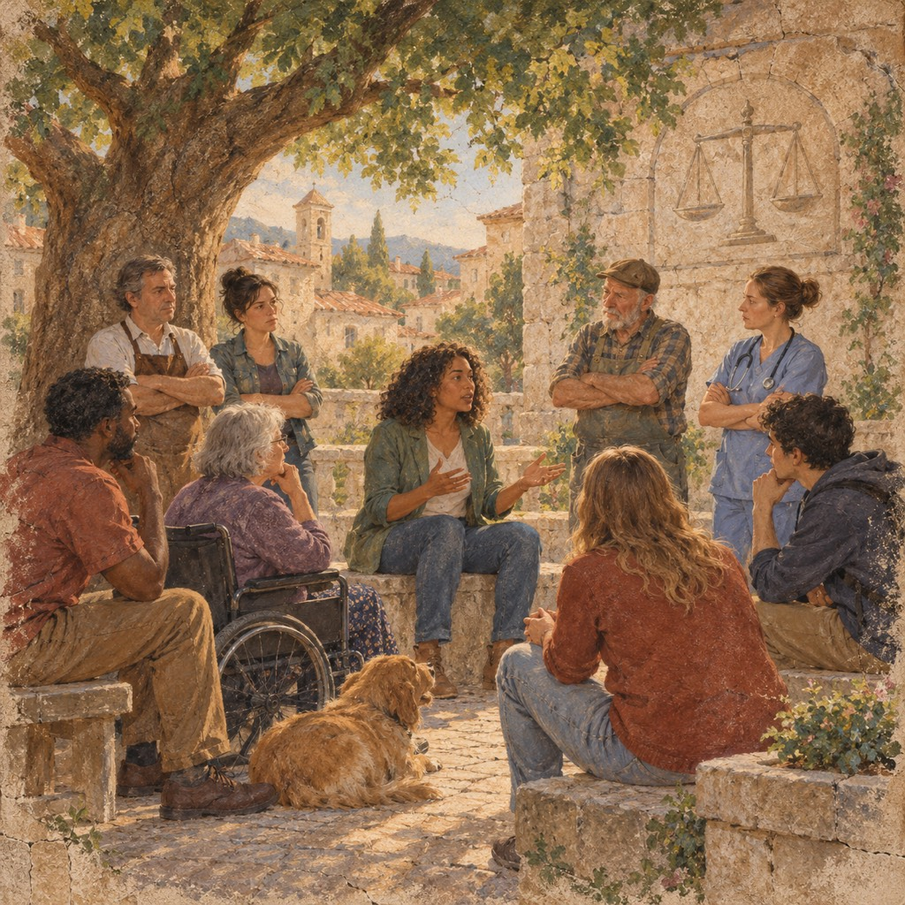
Weighing the case. Neighbours hear a case out, some of them unconvinced, under a carving of the scales. A strong case can take a challenge.
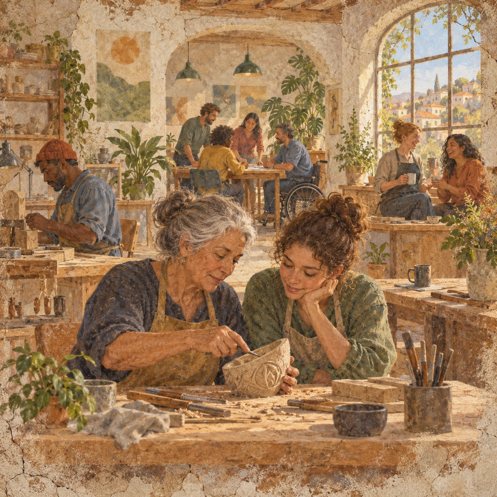
Company by design. An older craftswoman teaches a younger one in a shared workshop. Isolation and lost mentoring are real; shared places and planned time together are part of the answer.
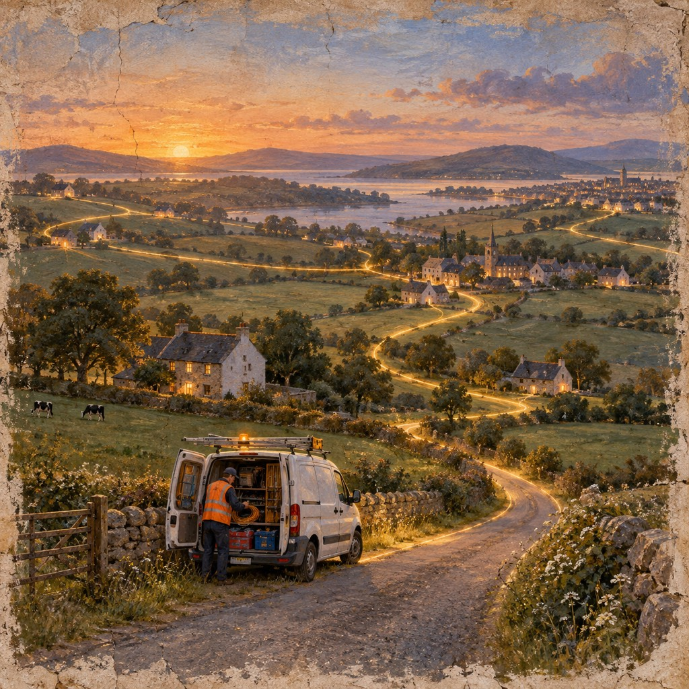
Light along the lanes. A line of light runs along the country lanes from farm to farm. Only people with a connection can join in, so the connection is part of the case.
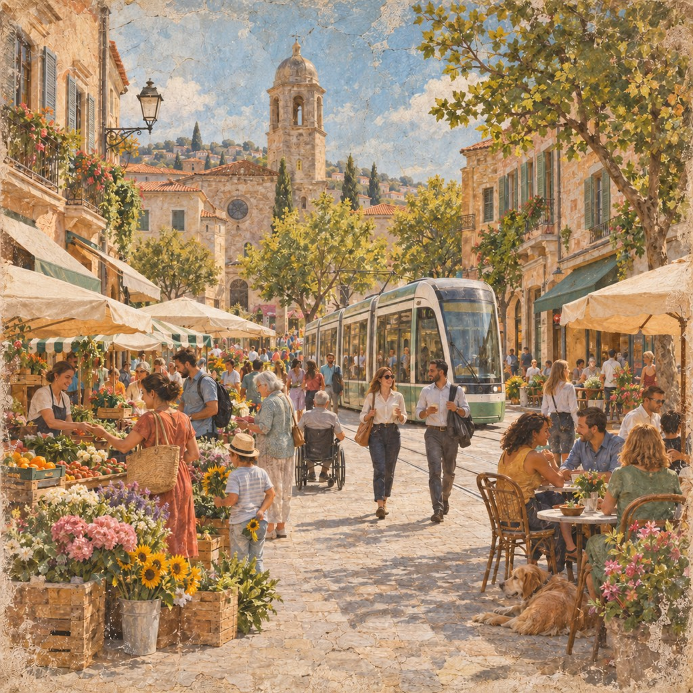
A town centre at midday. Market stalls, café tables and a tram in a busy square at lunchtime. Centres change when commuting falls; they don’t have to empty.
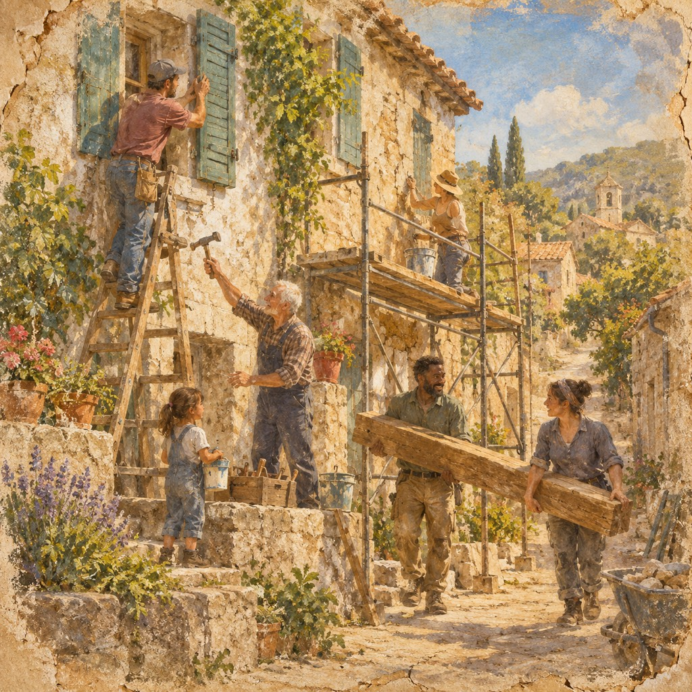
Building homes together. Neighbours and newcomers repair an old stone house: shutters, scaffolding, a new beam. Housing protection comes before recruitment, and newcomers can help build it.
10 · What would you ask for?
The Charter Room
Turn what you value into what you ask for.
Here is what you picked up on the way, and what it adds up to. Open your charter board to see every value side by side, change your mind, and see what the office would ask you to give up. Then choose the requests you would take to an employer, a council or a legislator. Your choices stay on this page unless you download them.
Your journey Illustration
The values you collected, where you landed in the Great Hall and the choices you made.
Your charter Proposal
Every value on one board, by category, with a scoreboard: remote work against the office. Add or take away anything, read the case for each, then choose your asks.
Give workers a right to choose remote work wherever tasks allow, with employers required to justify attendance. Employer · legislator: Ask for a task-based attendance policy, protected mentoring and a review of outcomes.
Prohibit residence-only pay discounts for comparable work in the same employer-market pay band. Employer · legislator: Ask for transparent employer-market pay bands and a way to contest residence-only discounts.
Make accessible shared workspaces and reliable connections available locally. Council · community: Map unmet access and social needs before funding a reachable, affordable hub.
Protect resident housing and services before recruiting new households. Council · community: Publish vacancy, affordability and service-capacity checks, with a pause rule for displacement.
Measure the whole environmental footprint and design to keep the net saving. Employer · council: Track travel, building energy and space together, and reuse land and buildings deliberately.
Share the public gains with workers whose jobs require presence. Employer · council: Improve on-site conditions and protect affordable homes and all-day transport.
On the walls
Putting your name to it. A woman signs a long charter while others wait their turn: a cyclist with his helmet, an older woman, a nurse, a father holding his baby.
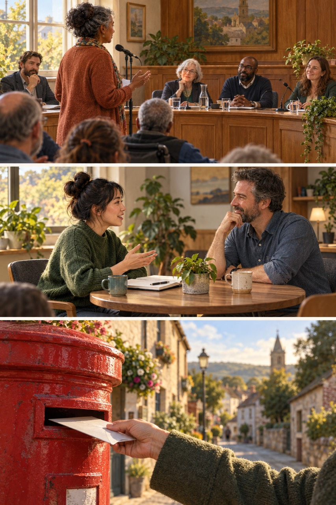
Taking the ask to the people who decide. Three ways to make the ask: speak at the council meeting, raise it with your employer, write to your representative.
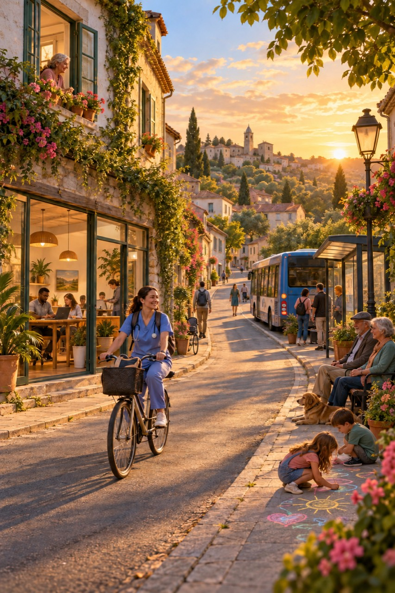
The street we asked for. Evening on the street the charter asks for: a nurse cycling home, a hub with lit windows, a bus at the stop, neighbours on a bench and children chalking the pavement.
The charter board: every value, by category
In the Charter Room the values are laid out by category with a scoreboard. Remote work scores a point for each value it can provide, with or without good design. The office scores only for commercial priorities, and every office point is listed with what it costs: people, the planet or fairness. Conditions are shown but count for neither side. This board makes the case for remote work: commercial priorities are described as we see them, and the Great Hall above gives the strongest good-faith objections.
Time, money & health
What the commute takes from each of us, every working day.
Mornings that start at home · Remote provides. No platform, no traffic jam: the day starts with breakfast, a walk or the school run. For many people the commute is the first thing they do each day and the last thing they do each evening. Without it, the edges of the day go back to the person living it: breakfast with the children, a walk, a proper night’s sleep instead of an early alarm. Workers in a 27-country survey saved about 72 minutes on each home-working day (Measured).
“The commute is your own time” · Commercial priority · costs people. You give the hours and pay the fares; the employer gets you at your desk. What they say: “We don’t pay for your journey. Getting here is your business.” In most jobs the journey to work is unpaid, and fares, fuel and parking come out of the worker’s own pocket. An hour’s round trip each working day adds up to more than two hundred hours a year that the employer neither pays for nor has to justify. Requiring that journey when the work could be done without it moves a real cost from the company onto its staff. It is a pay cut that never appears on a payslip.
My time back · Remote provides. About 72 minutes saved on each home-working day, across 27 countries (Measured). Time is the most direct thing remote work gives back. A survey across 27 countries estimated about 72 minutes saved on each home-working day. On average people put about 40% of it back into paid work, about a third into leisure and about a tenth into caring for others (Measured). Even the share that goes back into work arrives without the train.
Money that stays in my pocket · Remote provides. Fewer fares, less fuel, no parking, fewer bought lunches. Every commuting day has a price: a ticket or fuel, parking, wear on a car, the coffee and lunch bought because you’re away from home. Working remotely cuts most of those costs at once. Some come back as home heating and electricity, so the saving depends on the household, but for people on modest pay it can be the change they notice most.
Freedom & trust
Who decides where good work happens, and on what grounds.
Choosing where I live · Remote provides. When the job no longer fixes your address, you can live near family, nature or a cheaper rent. For most of the last century the job decided the map: you lived within reach of the office, or you didn’t get the job. Remote work breaks that link. People can stay where they grew up, move closer to ageing parents, or leave a city they can no longer afford, without giving up work they’re good at. It isn’t open to every job, and popular places still need their homes protected, but for a great many jobs the address can now be a choice.
A working week that fits my life · With good design. Work fitted around appointments, school runs and energy levels, within what the team needs. Remote work makes it possible to move an hour, keep the dentist appointment, or do focused work when you focus best. It only works with good design: agreed hours for working together, clear expectations, and managers who judge results. Without those, flexibility can blur into always being on.
“It’s company policy” · Commercial priority · costs people. An instruction with no reason the work needs: compliance for its own sake. What they say: “Everyone is in the office three days a week. That’s the policy.” A good rule can say what it protects: a patient, a lab, a secure system, a new starter who needs teaching. A rule that can’t say what the work gains from your presence isn’t a reason; it’s an order. When people who have done their jobs well from home are told to return “because it’s policy”, attendance stops being about the work and becomes a test of obedience. It treats adults as attendance to be managed rather than people to be trusted. Attendance should be justified by the task, not imposed by the title.
Being judged on my work, not my attendance · With good design. Results, not badge swipes. It only helps if managers learn to judge outcomes well. A badge swipe proves someone arrived, nothing more. Remote work removes attendance as a stand-in for effort and pushes organisations to say what good work actually looks like. In a randomised trial at Trip.com, two home days a week made no detectable difference to performance reviews or promotions over two years (Measured). The design part matters: clear goals, fair reviews and managers trained to judge results.
“Our culture needs you here” · Commercial priority · costs people. Belonging made conditional on attendance, with the price paid by the worker. What they say: “Our culture is built in the office. If you’re not here, you’re not part of it.” Culture is how people treat each other, and it is worth having. But when “culture” is used to mean headcount in a building, it becomes leverage: belonging, loyalty and career prospects are tied to showing up, while the price of showing up (the hours, the fares, the extra childcare) is paid by the employee. A culture that only exists while it is being watched is not much of a culture. Real belonging can be built on purpose, in days worth travelling for, without charging people for the privilege every morning.
“I need to see people working” · Commercial priority · costs people. Managing by line of sight: presence mistaken for productivity. What they say: “If I can’t see you, how do I know you’re working?” Watching people sit at desks measures sitting at desks. It rewards whoever is seen staying late and penalises whoever leaves on time to collect a child, whatever either of them achieved. In the randomised Trip.com trial, two home days a week made no detectable difference to performance reviews or promotions (Measured). Needing to see people working is an admission that the work itself isn’t being measured. The fix is better management, not a longer commute.
“We’ve always worked this way” · Commercial priority · costs people. Habit dressed up as principle, while governments and towns are already planning for change. What they say: “This is how work is done. It has served us fine.” The daily journey to a central office suited paper files, desk phones and machines that couldn’t move. Many of those reasons have gone; the habit remains. The governments, towns and regions in this room are already treating remote work as infrastructure. Holding on to the old pattern because it is familiar asks people to keep paying, in hours and fares, for a world that has already changed.
Family & community
The people around us, on weekdays as well as weekends.
The buzz of a busy office · A condition to meet. Remote work thins this out. Purposeful days together and local hubs can bring some of it back. The energy of a busy room is real, and so is the overheard conversation that teaches a new starter how things are done. Studies found more siloed collaboration during a firm-wide remote shift, and less code-review feedback for younger engineers who sat further from their teammates (Measured). That is a condition remote work has to meet, not a reason to commute every day: planned days together, protected mentoring, and hubs where people work alongside others.
Time with family · Remote provides. About a third of saved commute time goes to leisure and a tenth to caring for others (Measured). The hours that used to go on the road go somewhere. Across 27 countries, about a third of saved commute time went to leisure and about a tenth to caring for children and others, on average (Measured). That is dinner together, homework at the kitchen table, a parent visited on a Tuesday. Working at home is not childcare, though; the gain lasts only if boundaries are protected.
Being there for people who need me · Remote provides. Close by for a sick child, an ageing parent or a neighbour who needs a hand. Being an hour away is what turns a child’s temperature or a parent’s fall into a crisis. Working near home makes it possible to be there in minutes, deal with it, and get back to work. It doesn’t replace paid care or proper leave, and saved time must not quietly turn into unpaid work, especially for women. With those protections, being close is a quiet, enormous good.
A lively neighbourhood on weekdays · With good design. Spending moves towards where people live, but unevenly; the least affluent areas gain least (Modelled). When fewer people commute, the coffee, lunch and errands follow them home. A model for England and Wales found local service spending shifting from a few office districts to many residential neighbourhoods. It is a redistribution rather than new money, and the least affluent areas gained least (Modelled). With local plans that back small shops and services, weekday streets can come back to life.
Not feeling alone · A condition to meet. Careless remote work makes isolation worse, especially for people who live alone (Measured). Company by design is the fix. This is the strongest evidence against careless remote work. A study of US workers found that people in jobs that could go remote spent about an extra hour alone each workday after the pandemic, with worse distress, concentrated among people living alone (Measured). It is a condition remote work must meet: local hubs, planned time together and neighbourhoods with daytime life. The answer is company by design, not a daily commute.
“Keep the business district busy” · Commercial priority · costs people and the planet. Whole workforces sent commuting to protect footfall and rents in a few districts. What they say: “Downtown needs the commuters. Think of the sandwich shops.” Office districts, their landlords and the businesses around them have a genuine stake in commuting. But asking whole workforces to travel every day so that a few square kilometres keep their footfall and rents puts property values ahead of people’s time, the roads they clog and the neighbourhoods they live in. The spending doesn’t vanish when people work locally: in a model for England and Wales it moves to residential neighbourhoods (Modelled). The real question is whose high street deserves it.
Living near the people I love · Remote provides. A job that travels lets people stay near ageing parents, children or the place they grew up. Families get stretched across the map by where the jobs are. A job that can travel lets a daughter stay near her ageing father, lets grandparents help with the school run, and lets adult children come home without starting their careers again. Being near the people you love shouldn’t depend on an office’s commuting radius.
Company when I want it · With good design. Local hubs and planned team days give people company without a daily commute. Ireland’s Connected Hubs network lets people book desks and meeting rooms in local hubs run by communities, councils and businesses (Programme). A hub down the road offers a fast connection, a quiet room and people to have lunch with, without an hour on the motorway. It is the most direct answer to isolation, though no study yet shows that hubs fully fix it.
Cleaner air on my street · Remote provides. Each avoided car commute takes its exhaust, tyre dust and noise off the road. Rush hour packs the most traffic onto the roads at once. Every car journey that doesn’t happen removes its exhaust, tyre and brake dust, noise and danger from the streets people live on, including the routes children walk to school. The benefit is immediate and local: felt on your own street, not just in a national statistic.
A stable climate · With good design. Real, but schedule-dependent: more remote days and less office space cut more (Modelled). In a US carbon-accounting model, one home day a week barely changed the work-related footprint (about 2%), two to four days cut it by about 11–29%, and fully remote work came out about 54% lower, mostly because of less office energy (Modelled). The design matters: the saving shrinks if people drive more for other trips or heat big homes badly, and grows when offices shrink and land is reused.
Parks instead of parking · With good design. Fewer parked cars free up land, but only a decision turns it into shade, play or homes. A parking space is about the size of a small bedroom, and an office car park holds hundreds of them. As commuting falls, car parks and half-empty office blocks become land that towns could use for trees, play space, homes and shade in heatwaves. None of that happens by itself; councils and owners have to choose it.
“We’re paying for the building” · Commercial priority · costs the planet. People made to travel so that a property decision looks justified. What they say: “We’ve signed a long lease. Those desks need filling.” An office lease is a past decision: the money is spent whether anyone sits there or not. Ordering staff back to fill floor space doesn’t recover any of it. It adds the cost of their commutes, in time, fares and emissions, on top. In the US model in this room, most of the footprint saved by fully remote work came from less office energy and space (Modelled). Keeping buildings full for the sake of the lease turns a property decision into a climate cost that everyone pays.
Daily needs within a short walk · With good design. Shops, school, clinic, park and a place to work, close enough to walk or cycle. Paris plans its neighbourhoods so that daily needs, including work, care, shopping and recreation, are within a 15-minute walk or a five-minute cycle, and EU guidance applies a 30-minute idea to rural communities (Programme). Remote work fits naturally: if work can be near home, so can much of everything else. These are planning goals, not proven outcomes.
Walking and cycling instead of driving · With good design. In a compact place built around a hub, everyday trips are short enough to walk or cycle. Many car trips are short. When the work hub, school and shops are close to home, many of those trips can be made on foot or by bike: cleaner, cheaper and healthier. It depends on compact planning and safe routes; scattered growth along roads would undo it.
Fair pay & opportunity
Who gets the job, and what the same work is worth.
“We only hire within commuting distance” · Commercial priority · costs fairness. Talent filtered by postcode: the village, the region and the carer need not apply. What they say: “We want people who can come in. Candidates must live within an hour of head office.” A commuting radius quietly decides who can have a career. It shuts out the talented person in a village two hours away, the parent who can’t move a family, and whole regions whose young people must leave to get on. Work that could be done from anywhere is rationed to people who can afford to live near one expensive centre. Choosing it accepts that where you live limits what you can become.
Jobs open to disabled people and carers · Remote provides. Removing a daily journey removes a barrier. For some, an accessible local hub works better than home. Inaccessible stations, broken lifts, chronic pain, fatigue and caring duties can turn a reachable job into an impossible one. Remote work takes the daily journey out of that equation and lets people manage their own surroundings. It is individual: some people work best at home, others in an accessible hub nearby. What matters is that the choice exists.
Opportunity wherever you live · With good design. Only with reliable connections and somewhere suitable to work. Remote work can bring good jobs to places that have rarely had them, but only where there is a reliable connection and somewhere suitable to work. Worldwide in 2024, about 83% of urban residents used the Internet against 48% of rural residents (Measured). Public broadband and local hubs turn the promise into a real opportunity.
A fair deal for people who must be on site · With good design. Only if public gains, like freed road space and lower emissions, are shared with on-site workers. Nurses, cleaners, builders and shop staff will always work on site. Remote work doesn’t help them directly, but its public gains can: quieter roads on the way to work, land freed for homes near hospitals and schools, money for all-day buses. Sharing those gains is part of the case, not an afterthought.
“One rule for everyone” · Commercial priority · costs fairness. Equal on paper, unequal in practice: disabled people and carers carry the burden. What they say: “It wouldn’t be fair to make exceptions. Everyone comes in.” A blanket attendance rule sounds even-handed, but a ten-minute drive and a two-hour journey with an unreliable lift are not the same demand. Treating unequal situations identically is how disabled people, carers and people far from the office get pushed out. UK and EU law already require reasonable adjustments for disabled workers, and a rule that disadvantages a protected group without good justification can amount to indirect discrimination. A “fairness” that only works for people who were already advantaged isn’t fair.
Equal pay for equal work · With good design. Remote work makes it possible to do the job from anywhere. A pay rule makes it fair. If the job, the employer and the level are the same, the pay band should be the same, wherever the worker lives. Remote work makes that question unavoidable. The proposal here is to prohibit residence-only base-pay discounts within an employer’s pay band; differences in responsibility, experience or hours can still be paid for. It is a proposal, not current law.
Talent from everywhere · Remote provides. Employers hire the best person for the job, not the best person within an hour’s drive. A commuting radius limits every hire to the people who happen to live nearby or can afford to move. Remote hiring widens the pool to people in smaller towns, other regions and circumstances that don’t allow relocation. Employers get better matches; workers get jobs that fit their skills rather than their postcode.
“We pay market rates” · Commercial priority · costs fairness. Move your chair and your work is suddenly worth less: same job, same employer, less pay. What they say: “Pay reflects the local market. Move somewhere cheaper and your salary adjusts.” Location-based pay says that the same work, for the same employer, at the same level, is worth less when it is done from a cheaper place. Nothing about the work has changed: not the skill, the hours, the output or its value to the company. Only the address. Equal pay for equal work is a principle the law already applies between women and men; location pay carves out an exception that lets the employer pay less for where you sit. In effect it says: move your chair, and your work is worth less than it was yesterday, simply because we’re allowed to do that.
Living places
Villages, towns and regions that people can stay in.
A bustling city centre · A condition to meet. Fewer commuters mean less weekday trade in office districts. They need help to become mixed, all-day places. Office districts built around nine to five lose trade when commuting falls, and the people working in their cafés and shops feel it first. That is a real cost and a condition to plan for: turning empty offices into homes, culture and services makes centres places people live in and visit, not only places they are sent to. A centre that only works when it is filled by obligation was always fragile.
Villages that stay alive · With good design. Year-round residents can keep a shop, school or bus viable, if locals can stay too. A village can lose its school, shop or bus long before its last resident leaves. Income earned elsewhere but spent locally, by people who are around on weekdays, can keep that everyday demand alive. It works only alongside housing protection and local livelihoods; otherwise newcomers simply replace the people who were there.
Young people who can stay · With good design. A career without leaving home, if there are homes and connections to stay for. Rural places have lost generations of school-leavers to the cities, because that’s where the careers were. When good jobs can be done from anywhere with a connection, leaving becomes a choice rather than a requirement. It needs affordable homes, reliable broadband and somewhere to work alongside others: exactly what a resident-led plan can provide.
Homes locals can afford · A condition to meet. New demand can raise rents in small places. Protect and restore homes before inviting growth. Remote workers on city salaries can outbid local families in small housing markets. Housing demand did spread beyond city cores in 2020–21, though the price effects can’t be cleanly pinned on remote work (Measured). This is a condition, not a reason to stop: restore empty homes, protect tenancies and use community housing trusts before recruiting newcomers.
Regions that keep their talent · With good design. People can stay and earn; regions benefit if spending and housing stay local and fair. When people can earn a good salary without moving to the capital, that income is spent in local shops, paid in local taxes, and the skills stay where they grew. EU policy already aims for connected networks of cities, towns and rural places rather than one dominant centre (Programme). It works if housing and services keep pace, and if pay isn’t cut for staying.
Town centres with a second life · With good design. Empty banks and shops can become hubs, homes and services that keep main streets busy. Ireland’s Town Centre First policy backs local town teams tackling vacancy and dereliction and encourages people to live in town centres again (Programme). Remote work adds a reason: a hub in the old bank brings weekday footfall that a single shop never could. The policy is a framework, not proof of results, so its outcomes are worth checking.
Places designed around everyday life · With good design. Remote work gives planners room to put homes, services and work close together. The planning still has to happen. When work no longer pulls everyone into one centre at the same hour, places can be planned around daily life instead: homes, a school, a clinic, a hub and green space within reach of each other. Commonstead is one invented example. None of it happens by itself; it takes a plan, public investment and residents with real power.
A say in how my place grows · With good design. Growth that residents choose, instead of change that happens to them. New residents, new money and new building can feel like something done to a place. In the Commonstead proposal, residents govern the growth plan, a community housing trust secures homes, and growth pauses if rents or services come under strain. Remote work creates the chance to grow; resident control decides whether that growth is welcome.
“Growth belongs in the big city” · Commercial priority · costs fairness and the planet. Opportunity piled up where housing is dearest; everywhere else commutes in or empties out. What they say: “Serious jobs are in the capital. Ambitious people move there.” Packing good jobs into one expensive centre forces a choice on everyone else: commute long distances, pay the capital’s rents, or give up the career. It pushes up housing costs at the centre while towns and villages lose their young people and their weekday life. EU policy itself aims for connected networks of places rather than one dominant centre (Programme). Insisting that ambition requires relocation keeps opportunity rationed by geography.
Irish national rural development policy, 2021–2025
Sets commitments around remote work, broadband, town-centre renewal, local plans, public services, transport, culture, and climate action. These are policy aims, not a measured causal evaluation of remote work.
Irish government description of the national hub network and booking platform
Describes a booking platform for desks, meeting rooms, and related services; hub ownership and services vary. Shows a shared-infrastructure model, not proof of local economic or demographic impact.
Irish government place-based town policy, launched 2022
Supports resident, business, and community town teams; addresses vacancy and dereliction and encourages town-centre living. A policy framework and pilot history, not a remote-worker impact study.
Program description from the rural settlement and entrepreneurship platform
Connects people seeking to settle and start a project in rural areas with towns seeking residents. The program describes mentoring and local-fit support; its own program description is not an independent impact evaluation.
The published criteria request at least two available rental homes from towns accepted into the program. This is an entry condition, not evidence that rents are affordable or that local housing needs are met.
Program requirements and town listings for Spain’s welcoming villages network
Describes minimum remote-work conditions, municipal backing, a local host, and a verification process before a town listing is published. Network membership does not establish who stays or whether housing remains affordable.
Madeira Regional Government tourism description, December 2021
Describes Ponta do Sol’s shared work space, Wi-Fi, and events at the John dos Passos Cultural Centre during the pilot period. The source records an offer, not permanent settlement or social and housing outcomes.
Program description by Startup Madeira, an initiative of the Madeira Regional Government
Describes the Ponta do Sol pilot in 2021 and was designed to involve local residents and businesses; the page reports that its wider program continued through 2025. Self-reported design and activity do not prove causation or rule out housing pressure.
Paris municipal planning concept and implementation description
Defines proximity around daily needs within a 15-minute walk or five-minute cycle, including work, care, shopping, culture, and recreation. This is an urban planning goal, not an outcome study of remote work.
EU Urban Mobility Observatory guidance for rural mobility planning
Discusses the 30-minute rural community as an accessibility concept for essential services. It is a planning radius, not a guarantee that every service can or should be provided in every village.
Calls for cooperation among cities, towns, and rural places through polycentric networks to spread development and improve access. It sets a shared policy direction, not evidence that remote work alone creates balanced growth.
Reviews transport, urban-rural links, housing, urban cores, co-working, polycentricity, and 15-minute-city planning. It describes opportunities and uncertainties; it does not establish remote work as a universal cause of rural revival.
Peer-reviewed US survey analysis published in Science, 2026
A difference-in-differences analysis of five nationally representative US worker surveys (N=588,322; 2011–2024, excluding 2020–2021) compares occupation-level remotability. Workers in remotable jobs spent about one extra hour alone per workday after the pandemic; distress, mental-health care use and antidepressant prescriptions also rose, with larger effects among people living alone. The study estimates remote work explains about a third of the rise in isolation and distress. It does not separate every hybrid and fully remote schedule or test hubs as a remedy.
Peer-reviewed PNAS carbon-accounting analysis using US workers and workplace scenarios, published 2023
The US model estimates a 54% lower work-related footprint for its fully remote baseline than onsite work; the abstract reports reductions of up to 58% across modeled scenarios. Two to four home-working days yield modeled reductions of 11–29%, while one day yields about 2%. The inputs include commute and non-commute travel, home and office energy, and ICT. The company is in a large city with reasonable mass transit, so these are scenario estimates, not universal causal effects.
Peer-reviewed randomized hybrid-work trial at Trip.com, Nature 2024
A six-month randomized trial assigned 1,612 Trip.com engineering, marketing and finance employees to two home-working days or five office days. Attrition fell by 2.4 percentage points against a 7.2% control rate, with no meaningful difference in performance reviews or promotions over two years. Retention effects were larger for women and non-managers and were also larger among long commuters. This was one employer and a hybrid schedule; interns and probationary rookies were excluded because onsite learning and mentoring matter.
International Labour Organization report, 2021, covering telework and other forms of home work
Documents differences in which occupations and places can support work from home and the need for labour protections, social security, and fair pay. Its pandemic-era workability estimates should not be treated as current workforce shares.
US National Institute of Standards and Technology technical guidance, SP 800-46 Rev. 2
Identifies added exposure for remote access and recommends threat modelling and controls for devices, authentication, networks, and accessed systems. It supports role-specific safeguards, not a claim that all work can safely be done remotely.
Microsoft US communication records, first half of 2020; Nature Human Behaviour, online 2021
Study of 61,182 employees reports more siloed collaboration networks and less synchronous communication during the firm-wide remote shift. This identifies a coordination cost in a pandemic setting, not a test of every remote design or a finding that remote work is infeasible.
Describes demand shifts beyond metropolitan cores in 2020–2021, especially rural places within commuting zones and smaller cities farther out. Price patterns are not a clean causal remote-work effect and do not imply a universal return to rural life or a particular migration ratio.
England and Wales potential local-service spending model; first published 2025, Economica 2026 issue
Using a nationally representative survey of nearly 35,000 UK workers and Census data, the authors estimate potential local-personal-service spending changes across 7,201 neighbourhoods in England and Wales. A 20% reduction in commuting is associated in their model with about 5% less local service spending; losses cluster in a few city-centre areas while gains are more dispersed. The least-affluent areas are most likely to benefit least, which may increase inequality. Spending is assumed independent of work location and residential relocation is not modeled, so these are estimates rather than observed causal outcomes.
Author study using the Global Survey of Working Arrangements in 27 countries; NBER Working Paper 30866 and AEA Papers and Proceedings, 2023
The authors estimate 72 minutes of commute time saved per work-from-home day in their 27-country sample. Workers allocate about 40% of that time to paid work, about 34% to leisure and 11% to caregiving. These are survey-based averages for sampled workers, not a promise that every worker gains the same time or controls how it is used.
Randomized work-location trial in India's data-entry sector; NBER Working Paper 31515, 2023
In one Indian data-entry firm, workers randomly assigned to work from home had 18% lower measured productivity than office-assigned workers; two-thirds of the difference appeared on the first day and the rest reflected faster learning in the office. The study also finds selection and treatment differences related to workers' home-work preferences and care constraints. This result is specific to the job and setting, not a productivity estimate for all remote work.
Quasi-experimental study of software engineers at one Fortune 500 firm, 2019–2024; Quarterly Journal of Economics, 2026
Using office closures and later return-to-office mandates as changes in proximity, the authors find that nearby teammates increase code-review feedback by 18.3% and improve code quality, with larger learning benefits for younger and less-tenured engineers. Experienced engineers write less code while mentoring nearby teammates. This is one firm's engineering work and a proximity study, not a randomized test of remote work or a universal rule.
EU legal instrument on equal pay for women and men for equal work or work of equal value, adopted 2023
Requires pay transparency and enforcement mechanisms for gender equal pay, including objective pay-setting criteria and pay-range information for applicants. It is relevant context for transparent bands, but it does not establish the proposal here to prohibit residence-only pay discounts; national implementation status is not assessed here.
Reports Internet use among 83% of urban residents and 48% of rural residents globally, with much smaller gaps in high-income settings. Internet use is not a measure of broadband speed, reliability or remote-job readiness; it shows that digital exclusion is not only urban.
How this was made
Argument: the project author · 3D experience and writing: Claude · Earlier research and editions: Codex · Starting discussion: ChatGPT.
The starting discussion supplied the themes. Research is checked separately against the sources above. Voices in the Great Hall are written for the exhibit and represent common views; they are not quotes. Commonstead, Alex, Sam and Noor, the pay figures and the rooms themselves are illustrations. Nothing here predicts traffic, prices or outcomes.
Your values, verdicts and choices stay in this page’s memory and clear when you reload. A download stays with you; nothing is sent anywhere. There are no analytics, cookies or accounts.
![Four panels in warm evening light. Top left: a nurse in blue scrubs leans over an older man in a hospital bed beside a drip stand and monitor. Top right: a scientist in safety glasses and blue gloves uses a pipette over a rack of test tubes. Bottom left: a woman sketches plants in a notebook at a kitchen table while a cat sits on the chair beside her. Bottom right: three people meet around a wooden table, smiling at a colleague who joins by video on a laptop, with a hill town and an old tower through the window.](./postcode-3.jpg)